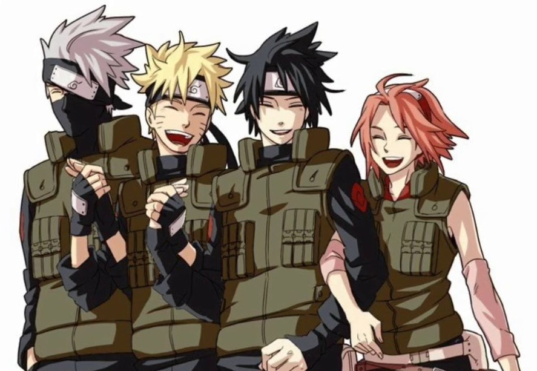

About Naruto
The story of Naruto Uzumaki, a young ninja who seeks recognition from his peers and dreams of becoming the Hokage, the leader of his village.
Naruto and his Friends (TEAM 7)
Characteristics
- Naruto is generally a very simple minded, easy going, cheerful person.
- He often rushes things, and misses obvious things such as Hinata's constant shyness around him.
- Naruto is very fun loving, often pulling pranks on fellow villagers.
- Naruto gets older, he eventually starts to become more serious and wises up.
- Naruto has a strong dedication to his friends, often willing to put his life on the line to protect them.
Friends
Team formed under the leadership of Kakashi Hatake.
Naruto, Sasuke, and Sakura are organised into a team